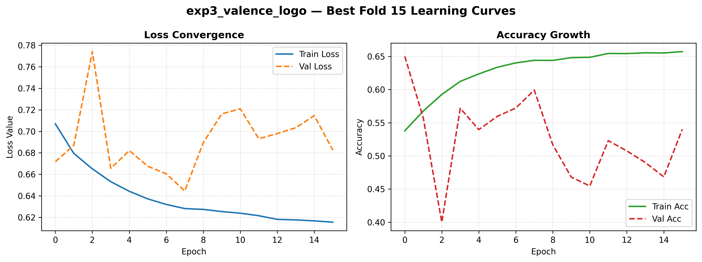

Báo cáo Bài tập lớn — Học phần Học máy (INT3405)
Trường Đại học Công nghệ, ĐHQGHN
Thành viên
Nguyễn Đức Long · Phạm Thái Dương · Nguyễn Tiến Dũng
3 thách thức cốt lõi:
SVM không học trực tiếp từ chuỗi thời gian thô → mỗi epoch (32×128) được ánh xạ thành vector đặc trưng trên 4 dải tần (θ 4–8Hz, α 8–13Hz, β 13–30Hz, γ 30–45Hz), loại bỏ Delta:
| Tham số | Giá trị | Mô tả |
|---|---|---|
| Algorithm | LinearSVC | Tối ưu cho dữ liệu chiều cao |
| Regularization | L2 | Phân bổ đều trọng số |
| C | Grid {0.001…1.0} | Tối ưu động qua GridSearch |
| LDS α | 0.3 | Áp dụng sau split train/test |
Mỗi epoch (32,128) → unsqueeze(1) → ảnh(1,32,128) (32 kênh × 128 timestep 128Hz).
| Batch | LR | Min/Max LR | Weight decay | Dropout | Grad clip | Max epoch | Early stop |
|---|---|---|---|---|---|---|---|
| 256 | 3e-4 | 1e-6 / 1e-2 | 1e-4 | 0.5 / 0.3 | 1.0 | 50 | 15 (LOSO: 20) |
Giám sát xu hướng F1-macro trên validation, áp dụng 3 quy tắc theo thứ tự ưu tiên:
Input (N,32,128) → permute → (N,128,32): mỗi timestep là vector 32 chiều (điện thế đồng thời tất cả kênh).
| Hidden (L1/L2) | Dropout | Batch | LR | Grad clip | AMP | Max epoch | Patience |
|---|---|---|---|---|---|---|---|
| 64 / 32 | 0.5 | 1024 | 3e-4 (Adam, wd=1e-4) | 1.0 | FP16 | 60 | 15 |
Thay biên độ thô bằng vector 312 chiều trên 4 dải (θ,α,β,γ) — tương tự SVM: PSD (Welch, log) 128 + DE (Butterworth bậc 5, DE=½ln(2πeσ²)) 128 + Asymmetry (14 cặp điện cực) 56.
DE đã được chứng minh hiệu quả hơn PSD trong nhận diện cảm xúc EEG (Duan et al., 2013). Đặc trưng tần số phản ánh trạng thái dao động ổn định của não, giảm ảnh hưởng SNR thấp.
Exp 1 — Phân loại 2 lớp (Accuracy / F1-macro):
| Mô hình | Nhãn | Accuracy | F1-macro |
|---|---|---|---|
| SVM | Valence | 0.5479 ± 0.0613 | 0.4989 ± 0.0541 |
| SVM | Arousal | 0.5667 ± 0.0684 | 0.5173 ± 0.0620 |
| CNN 2D | Valence | 0.6700 ± 0.0033 | 0.6691 ± 0.0030 |
| BiLSTM | Valence | 0.6573 ± 0.0036 | 0.6571 ± 0.0034 |
| BiLSTM | Arousal | 0.6444 ± 0.0051 | 0.6433 ± 0.0057 |
Exp 2 — Phân loại 4 lớp (V×A → Q1–Q4):
| Mô hình | Accuracy | F1-macro |
|---|---|---|
| SVM | 0.3597 ± 0.0815 | 0.2472 ± 0.0454 |
| CNN 2D | 0.4815 ± 0.0031 | 0.4701 ± 0.0024 |
| BiLSTM | 0.4672 ± 0.0059 | 0.4578 ± 0.0056 |
Kịch bản khắt khe nhất — đo khả năng tổng quát hóa thực sự (32 lần lặp, mỗi lần test 1 subject mới):
| Mô hình | Nhãn | Accuracy | F1-macro |
|---|---|---|---|
| SVM | Valence | 0.5208 ± 0.0450 | 0.5106 ± 0.0437 |
| SVM | Arousal | 0.5056 ± 0.0729 | 0.4935 ± 0.0772 |
| CNN 2D | Valence | 0.5973 ± 0.0979 | 0.5235 ± 0.0673 |
| BiLSTM | Valence | 0.5514 ± 0.0612 | 0.5020 ± 0.0367 |
| BiLSTM | Arousal | 0.5456 ± 0.0572 | 0.5025 ± 0.0292 |

Q&A